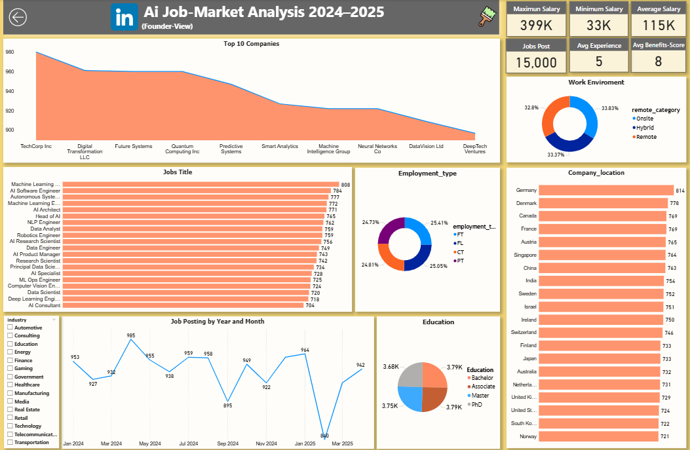
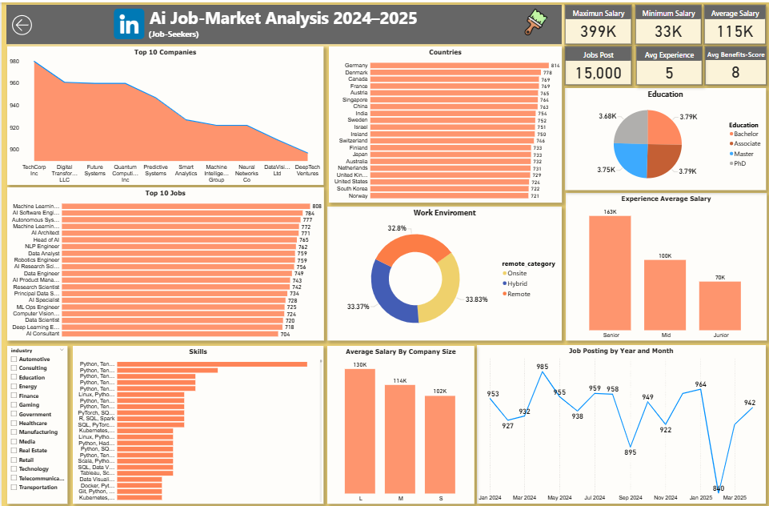
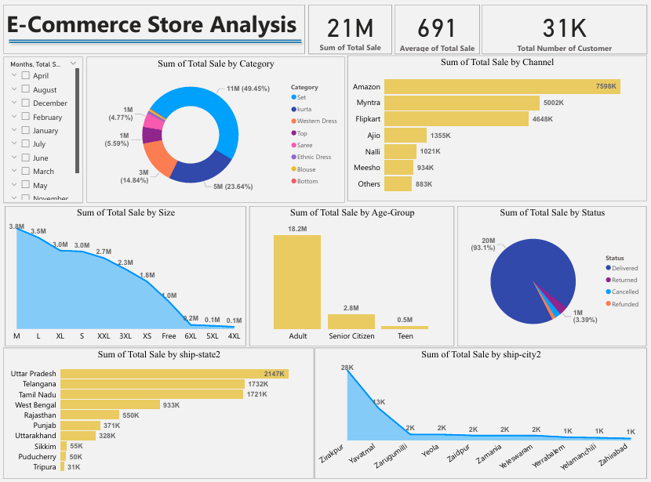
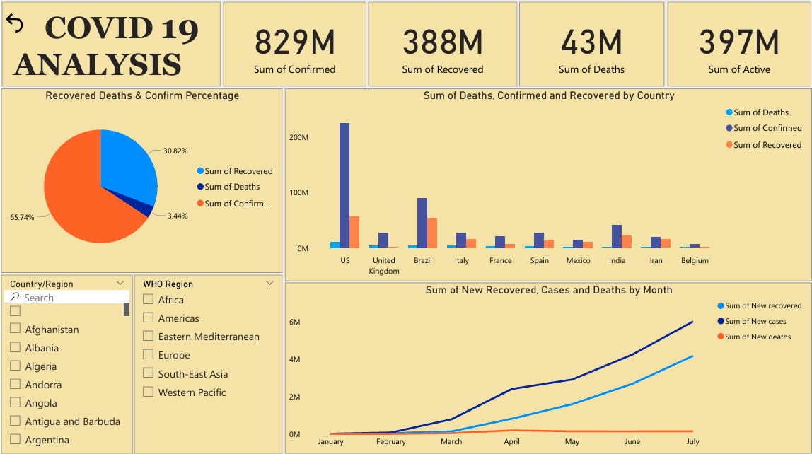
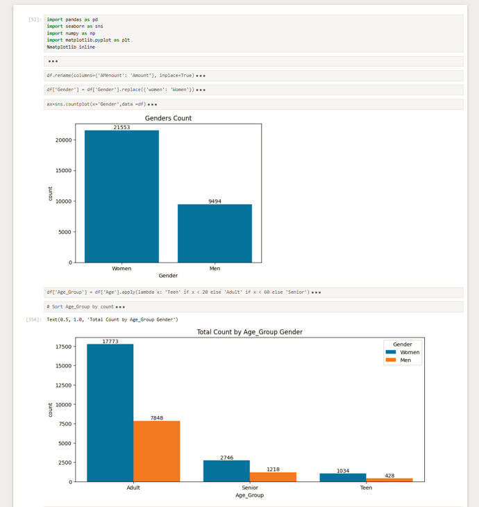
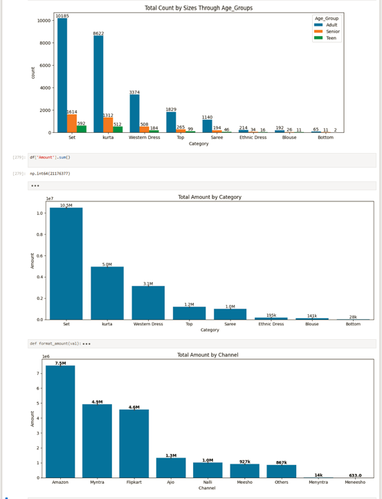
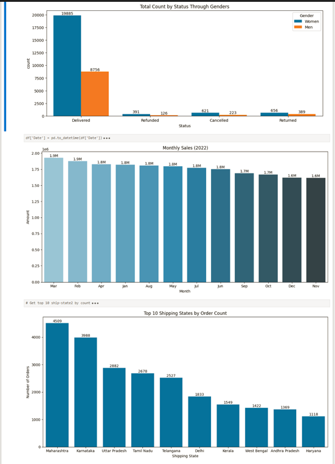
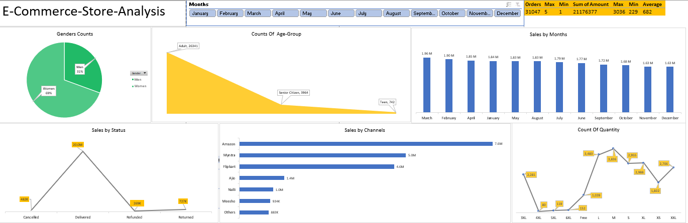
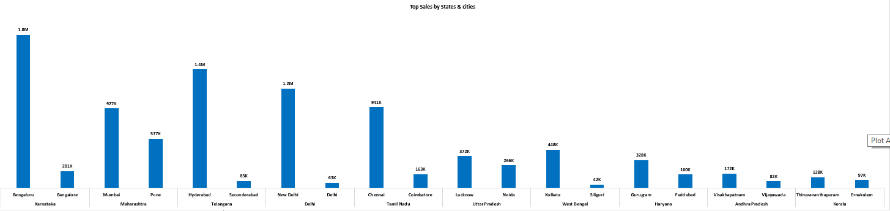

Overview:
This project presents a comprehensive analysis of the global AI job market using LinkedIn data, visualized through an interactive Power BI dashboard. The dashboard explores hiring trends, salary insights, top companies, and skill demand to assist both founders and job seekers in making data-driven decisions.
Key Features:
Dual Dashboard Views: Created two perspectives — Founder View (company insights) and Job-Seeker View (career insights) — to understand both sides of the job market.
Data Insights: Analyzed over 15,000 AI-related job postings with salary ranges from $33K to $399K and an average experience requirement of 5 years.
Top Companies & Roles: Highlighted leading employers such as TechCorp Inc, Future Systems, and Quantum Computing Inc, and top roles like Machine Learning Engineer, AI Software Engineer, and Data Analyst.
Work Environment Analysis: Compared Onsite (33.8%), Hybrid (33.4%), and Remote (32.8%) job distributions.
Education Breakdown: Showed that most AI roles require Bachelor’s and Master’s degrees equally, with a growing demand for PhDs in research-oriented positions.
Technical Implementation: Utilized Power BI for visualization, Python (Pandas, NumPy) for data cleaning and transformation, and Jira for project management.
Outcome:
Delivered two insightful dashboards that reveal how AI-related job demand, salary structures, and skill trends are evolving globally. This analysis helps companies refine hiring strategies and professionals align their skills with market demand.
Tools & Techniques: Power BI, Python, Data Cleaning, Feature Engineering, Data Visualization, Analytical Reporting
Dashboard Views:
Founder View: Focused on hiring distribution, company benefits, and work trends.
Job-Seeker View: Focused on top skills, education, and salary insights.

Overview:
This project presents a complete sales performance analysis of an e-commerce store through an interactive Power BI dashboard. It helps businesses monitor revenue, customer demographics, and product performance across multiple dimensions.
Key Features:
Sales Performance: Analyzed ₹21M total sales, 691 average order value, and 31K customers.
Category Breakdown: Showed product-wise contribution (Sets, Kurtas, Western Dress, Saree, etc.).
Channel Analysis: Compared sales from Amazon, Flipkart, Myntra, and other platforms.
Customer Demographics: Visualized age-group distribution (Adult, Senior Citizen, Teen).
Geographic Insights: Highlighted top-performing states (Uttar Pradesh, Telangana, Tamil Nadu, etc.) and cities.
Order Status Tracking: Displayed delivered, returned, cancelled, and refunded orders.
Size Trends: Analyzed sales distribution by clothing size to identify demand patterns.
Skills & Tools: Power BI, DAX, Data Visualization, Business Analytics
Outcome:
Provided actionable insights for business stakeholders to optimize product offerings, target profitable customer segments, and improve sales strategies.

Overview:
This project focuses on analyzing the global impact of the COVID-19 pandemic using an interactive Power BI dashboard. The goal was to track confirmed cases, recoveries, and deaths across different countries and WHO regions, while also identifying monthly patterns and trends.
Key Features:
Global Insights: Analyzed 829M+ confirmed cases, 388M recoveries, and 43M deaths.
Comparative Analysis: Visualized country-wise case distribution (US, Brazil, India, etc.) with bar charts for confirmed, recovered, and death cases.
Tracking:Line charts to monitor new cases, recoveries, and deaths over time.
Interactive Filters: Enabled drilldowns by country, WHO region, and time period.
Visual Storytelling: Used pie charts and comparative visuals to present recovery vs. active vs. death cases clearly.
& Tools: Power BI, Data Cleaning, Data Visualization, Analytical Reporting
Outcome:
Delivered a data-driven dashboard that helps policymakers, healthcare professionals, and the public understand the progression and impact of COVID-19 globally.
Optimized SQL queries with joins, subqueries, and indexing to handle large datasets efficiently.



Overview:
This project explores the FIFA dataset to perform comprehensive data wrangling and exploratory data analysis (EDA). The goal was to clean, prepare, and analyze player data while uncovering meaningful insights through Python visualizations.
Key Features:
Data Preparation: Imported and cleaned raw data using Pandas & NumPy.
Missing Values Handling: Treated and imputed missing data to ensure dataset reliability.
Descriptive Statistics: Generated summary statistics for both numerical and categorical variables.
Visual Analysis: Built visualizations with Matplotlib & Seaborn (bar charts, heatmaps, KDE plots, regressions).
Player Insights: Analyzed attributes such as position, foot preference, and ratings distribution.
Correlation Analysis: Examined relationships between key performance metrics (e.g., rating vs. defending).
Skills & Tools: Python, Pandas, NumPy, Matplotlib, Seaborn, Data Cleaning, EDA
Outcome:
Strengthened skills in data preparation, visualization, and analysis while uncovering insights about player performance trends. This project highlights my ability to handle raw datasets, apply Python libraries effectively, and deliver clear analytical outcomes.


Overview:
This project presents a complete sales performance analysis of an e-commerce store through an interactive Power BI dashboard. It helps businesses monitor revenue, customer demographics, and product performance across multiple dimensions.
Key Features:
Sales Performance: Analyzed ₹21M total sales, 691 average order value, and 31K customers.
Category Breakdown: Showed product-wise contribution (Sets, Kurtas, Western Dress, Saree, etc.).
Channel Analysis: Compared sales from Amazon, Flipkart, Myntra, and other platforms.
Customer Demographics: Visualized age-group distribution (Adult, Senior Citizen, Teen).
Geographic Insights: Highlighted top-performing states (Uttar Pradesh, Telangana, Tamil Nadu, etc.) and cities.
Order Status Tracking: Displayed delivered, returned, cancelled, and refunded orders.
Size Trends: Analyzed sales distribution by clothing size to identify demand patterns.
Skills & Tools: Power BI, DAX, Data Visualization, Business Analytics
Outcome:
Provided actionable insights for business stakeholders to optimize product offerings, target profitable customer segments, and improve sales strategies.